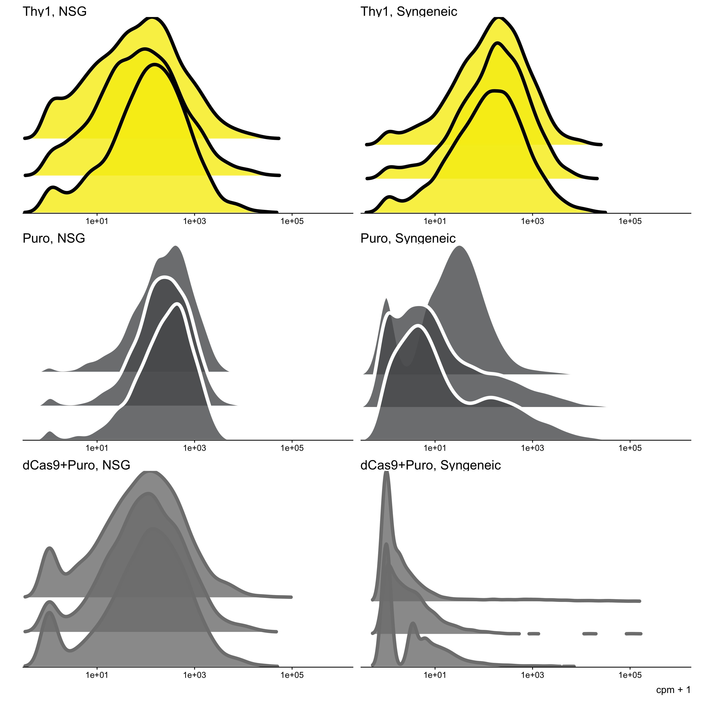
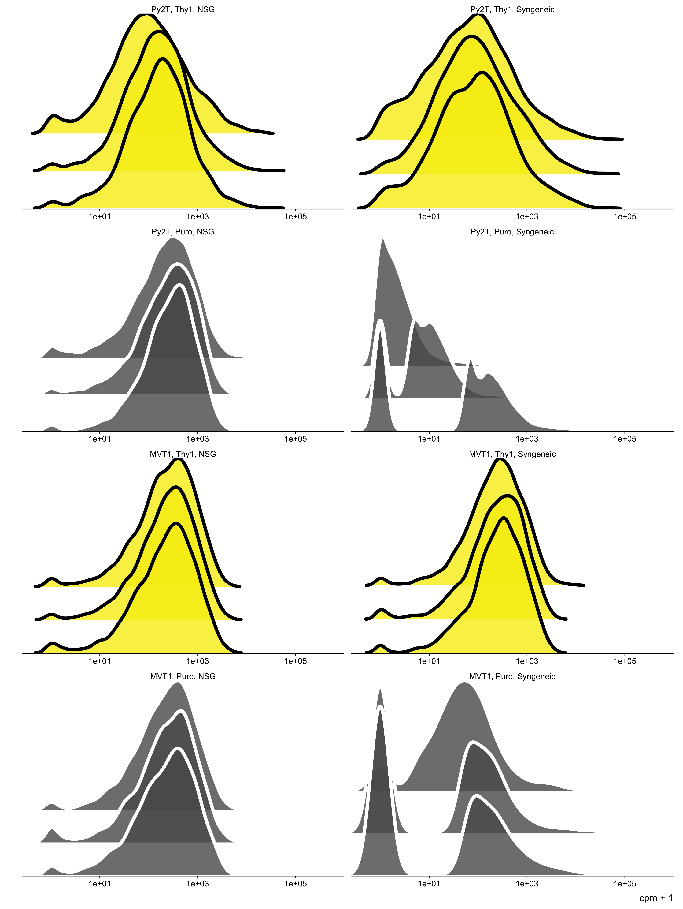
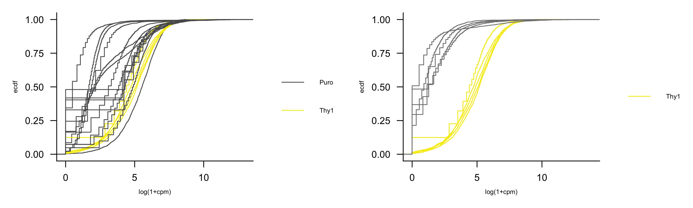
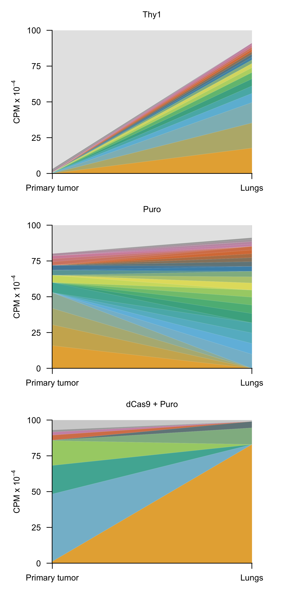
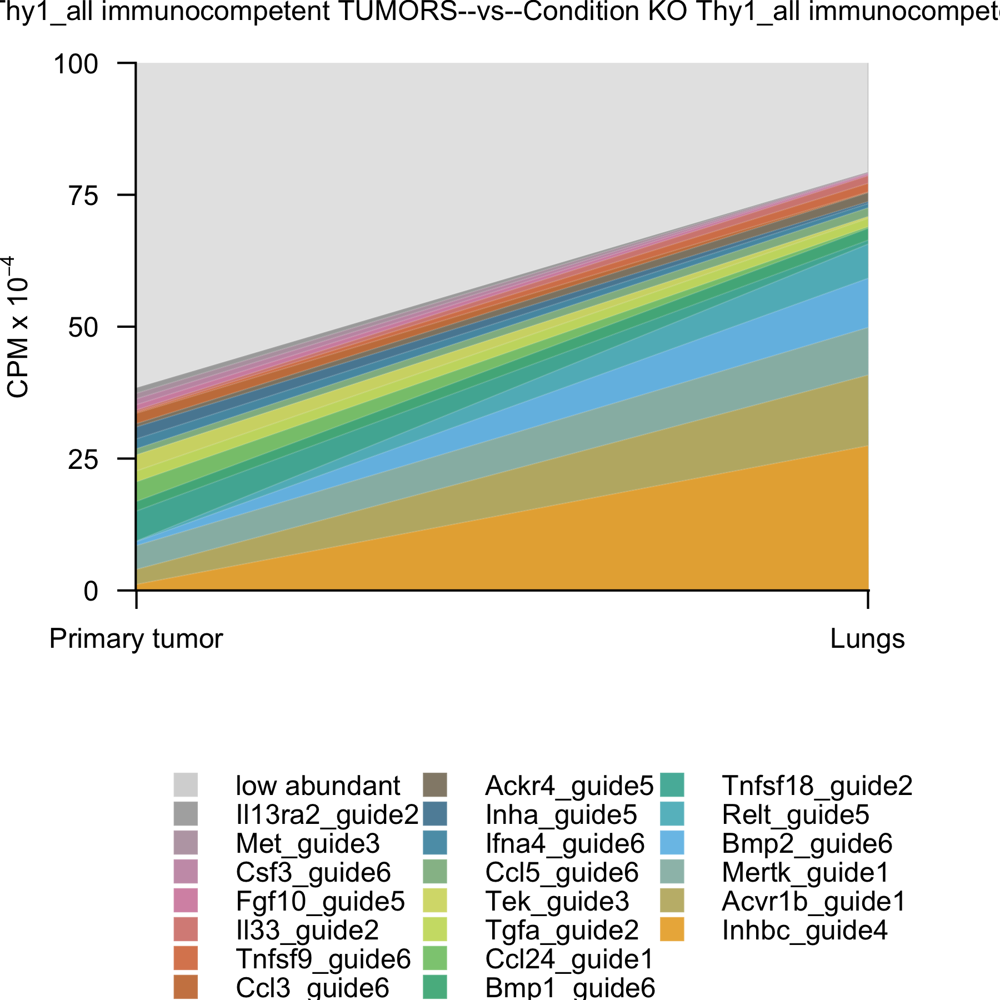
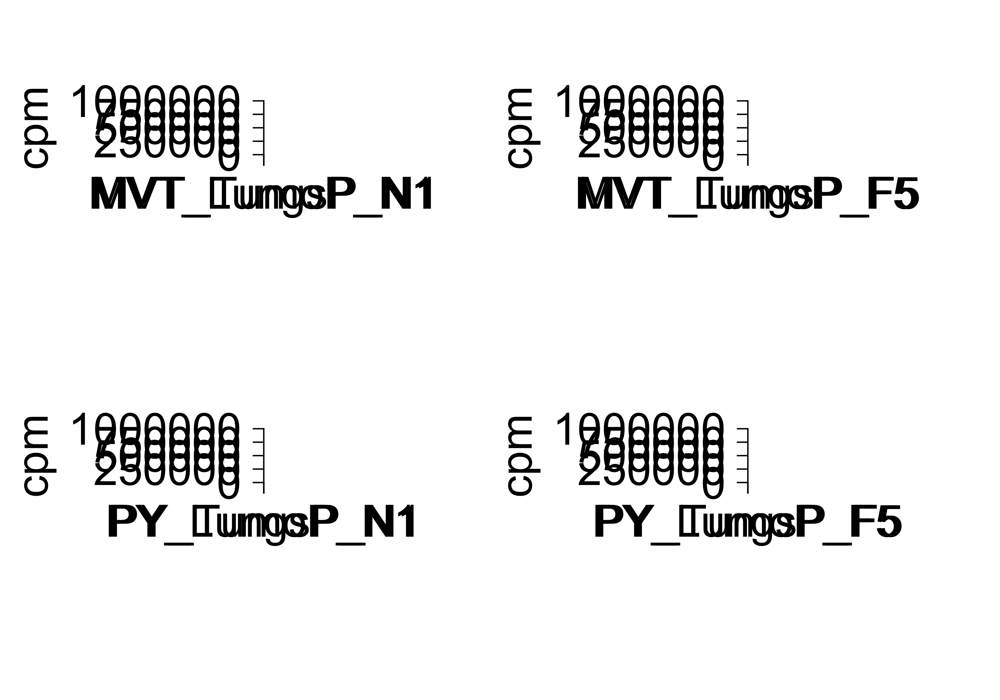
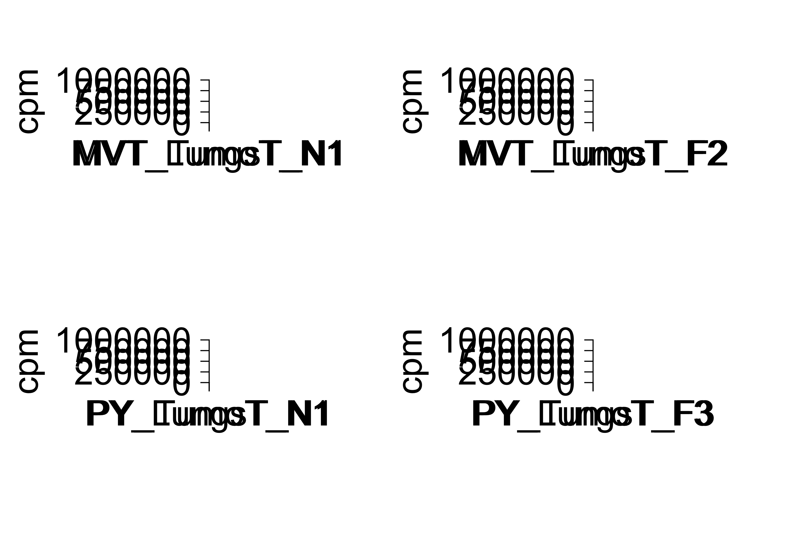

Last updated: 2025-07-01
Checks: 7 0
Knit directory: saini-stealTHY/
This reproducible R Markdown analysis was created with workflowr (version 1.7.1). The Checks tab describes the reproducibility checks that were applied when the results were created. The Past versions tab lists the development history.
Great! Since the R Markdown file has been committed to the Git repository, you know the exact version of the code that produced these results.
Great job! The global environment was empty. Objects defined in the global environment can affect the analysis in your R Markdown file in unknown ways. For reproduciblity it’s best to always run the code in an empty environment.
The command set.seed(20240517) was run prior to running
the code in the R Markdown file. Setting a seed ensures that any results
that rely on randomness, e.g. subsampling or permutations, are
reproducible.
Great job! Recording the operating system, R version, and package versions is critical for reproducibility.
Nice! There were no cached chunks for this analysis, so you can be confident that you successfully produced the results during this run.
Great job! Using relative paths to the files within your workflowr project makes it easier to run your code on other machines.
Great! You are using Git for version control. Tracking code development and connecting the code version to the results is critical for reproducibility.
The results in this page were generated with repository version 3681adf. See the Past versions tab to see a history of the changes made to the R Markdown and HTML files.
Note that you need to be careful to ensure that all relevant files for
the analysis have been committed to Git prior to generating the results
(you can use wflow_publish or
wflow_git_commit). workflowr only checks the R Markdown
file, but you know if there are other scripts or data files that it
depends on. Below is the status of the Git repository when the results
were generated:
Ignored files:
Ignored: .DS_Store
Ignored: .Rhistory
Ignored: .Rproj.user/
Ignored: analysis/.DS_Store
Ignored: code/.DS_Store
Ignored: code/raw_data_processing/rnaseq/p27851_o32062/pipelines/
Ignored: configuration/.DS_Store
Ignored: data/.DS_Store
Ignored: data/crispr/
Ignored: data/resources/
Ignored: data/rnaseq/
Ignored: output/.DS_Store
Ignored: output/clinical/
Ignored: output/crispr/
Ignored: output/rnaseq/
Untracked files:
Untracked: analysis/templates/
Untracked: code/R-functions/subchunkify.R
Unstaged changes:
Modified: .gitignore
Modified: analysis/crispr-hsapiens_2180_sgRNA.Rmd
Modified: analysis/crispr-mm_2215_sgRNA-r2oC.Rmd
Modified: code/R-functions/gse_report.r
Modified: configuration/rmarkdown/ggplot_theme.R
Modified: update_workflowr.R
Note that any generated files, e.g. HTML, png, CSS, etc., are not included in this status report because it is ok for generated content to have uncommitted changes.
These are the previous versions of the repository in which changes were
made to the R Markdown
(analysis/crispr-mm_2215_sgRNA-clonality_r1.Rmd) and HTML
(docs/crispr-mm_2215_sgRNA-clonality_r1.html) files. If
you’ve configured a remote Git repository (see
?wflow_git_remote), click on the hyperlinks in the table
below to view the files as they were in that past version.
| File | Version | Author | Date | Message |
|---|---|---|---|---|
| Rmd | 3681adf | Francesc Castro-Giner | 2025-07-01 | update crispr analyses |
Setup environment
knitr::opts_chunk$set(results='asis', echo=TRUE, message=FALSE, warning=FALSE, error=FALSE, fig.align = 'center', fig.width = 3.5, fig.asp = 0.618, dpi = 600, dev = c("png", "pdf"), fig.showtext = FALSE, engine.opts = list(bash = "-l"))
options(stringsAsFactors = FALSE)
use_seed <- 1100101
set.seed(use_seed)
# dir.create(params$output_dir, recursive = TRUE, showWarnings = FALSE)Load packages
library(tidyverse)
library(knitr)
library(foreach)
library(magrittr)
library(DT)
library(kableExtra)
library(diptest)
library(SummarizedExperiment)
library(ggridges)
library(ggh4x)
library(patchwork)
library(colorblindr)
library(ggbeeswarm)
library(ggpubr)
# library(showtext)
# library(DT)
# library(colorblindr)
# library(ggdendro)
# library(RColorBrewer)
# library(circlize)
# library(Hmisc)
# library(ComplexHeatmap)
# library(ineq)
# library(kableExtra)
# library(magrittr)
# library(ggrepel)
# library(ggpubr)
# library(ggbeeswarm)
# library(ggridges)Load ggplot theme
source("./configuration/rmarkdown/ggplot_theme.R")Load ggplot theme
source("./configuration/rmarkdown/color_palettes.R")Load Summarized Experiment object
se <- readRDS(file.path(params$data_dir, 'se.rds'))Filter samples used for this analysis
use_cols <- colData(se) %>%
data.frame %>%
filter(effect_type_short == 'noKO') %>%
filter(vector_short != "Thy1_EF1alpha_dCas9") %>%
rownames
se <- se[,use_cols]Data wrangling
chunk_colData <- colData(se) %>% data.frame %>%
mutate(
vector_short = ifelse(vector_short == 'Puro_EF1alpha_SpCas9',
'Cas9+Puro', vector_short),
vector_short = ifelse(vector_short == 'Puro+ dCas9',
'Cas9+Puro', vector_short),
vector_short = factor(vector_short, levels = c('Thy1', 'Puro', 'Cas9+Puro')),
mouse_model_short = case_match(mouse_model_global,
'immunodeficient' ~ 'NSG',
'immunocompetent' ~ 'Syngeneic',
'C57BL6' ~ 'Syngeneic'
),
mouse_model_short = factor(mouse_model_short, levels = c('NSG', 'Syngeneic')),
vector_mhost = paste0(vector_short, ', ', mouse_model_short),
model_vector_mhost = paste0(donor,', ', vector_short, ', ', mouse_model_short),
sample_type = ifelse(cancer_type %in% c('Breast', 'CRC'),
case_match(sample_type,
'whole_tumor' ~ 'Primary tumor',
'whole_lung' ~ 'Lung mets',
'bulk' ~ 'Bulk',
'cell_culture' ~ 'Cell culture'),
sample_type
),
sample_type = ifelse(cancer_type %in% c('NSCLC'),
case_match(sample_type,
'met_liver' ~ 'Liver mets',
'whole_lung' ~ 'Primary tumor',
'bulk' ~ 'Bulk',
'cell_culture' ~ 'Cell culture'),
sample_type
),
sample_type = factor(sample_type, levels = c('Primary tumor', 'Lung mets', 'Liver mets', 'Bulk', 'Cell culture'))
)
colData(se) <- chunk_colData %>% DataFrameDefine comparisons for modality and Kolmogorov-Smirnov test
x <- colData(se) %>% data.frame
group_list_modality <- list(
`Syngeneic Thy1` = x %>%
filter(vector_mmodel == '4T1-noKO-Thy1-BALB' & sample_type == 'Primary tumor') %>%
pull(sample_alias),
`Syngeneic Puro` = x %>%
filter(vector_mmodel %in% c('4T1-noKO-Puro-BALB', 'MVT1-noKO-Puro-FVB', 'Py2T-noKO-Puro-FVB') & sample_type == 'Primary tumor') %>%
pull(sample_alias),
`Syngeneic dCas9 + Puro` = x %>%
filter(vector_mmodel == '4T1-noKO-Puro_EF1alpha_dCas9-BALB' & sample_type == 'Primary tumor') %>%
pull(sample_alias),
`NSG Thy1` = x %>%
filter(vector_mmodel %in% c('4T1-noKO-Thy1-NSG', 'MVT1-noKO-Thy1-NSG', 'Py2T-noKO-Thy1-NSG') & sample_type == 'Primary tumor') %>%
pull(sample_alias),
`NSG Puro` = x %>%
filter(vector_mmodel %in% c('4T1-noKO-Puro-NSG', 'MVT1-noKO-Puro-NSG', 'Py2T-noKO-Puro-NSG') & sample_type == 'Primary tumor') %>%
pull(sample_alias),
`NSG dCas9 + Puro` = x %>%
filter(vector_mmodel == '4T1-noKO-Puro_EF1alpha_dCas9-NSG' & sample_type == 'Primary tumor') %>%
pull(sample_alias)
)
comp_list_modality <- list(
`Syngeneic Thy1 vs. dCas9 + Puro` = list(
`dCas9 + Puro` = group_list_modality$`Syngeneic dCas9 + Puro`,
`Thy1` = group_list_modality$`Syngeneic Thy1`
),
`Syngeneic Thy1 vs. Puro` = list(
`Puro` = group_list_modality$`Syngeneic Puro`,
`Thy1` = group_list_modality$`Syngeneic Thy1`
)#,
# `NSG Thy1 vs. Puro` = list(
# `Puro` = group_list_modality$`NSG Puro`,
# `Thy1` = group_list_modality$`NSG Thy1`
# )
)
group_df_modality <- foreach(i = names(group_list_modality), .combine = rbind) %do% {
data.frame(
sample_alias = group_list_modality[[i]],
modality_group = i
)
}use_sample_type <- 'Primary tumor'
use_colData <- colData(se) %>% data.frame %>%
filter(sample_type == use_sample_type)Density plots showing the distribution of unique sgRNAs retrieved in orthotopic primary tumors from the indicated mice transplanted with 4T1 cells, previously transduced as indicated; frequency is shown as read counts per million (cpm) in log10 scale adding a pseudocunt of 1; Each plot is representative of a group of n=5 mice.
selected_panels <- list(
`Thy1, NSG` = c('4T_TumoT_N4', '4T_TumoT_N5', '4T_TumoT_N2'),
`Thy1, Syngeneic` = c('4T_TumoT_B1', '4T_TumoT_B3', '4T_TumoT_B4'),
`Puro, NSG` = c('4T_TumoP_N5', '4T_TumoP_N4', '4T_TumoP_N2'),
`Puro, Syngeneic` = c('4T_TumoP_B3', '4T_TumoP_B2', '4T_TumoP_B1'),
`dCas9+Puro, NSG` = c('PlatePositionE1', 'PlatePositionC1', 'PlatePositionA2'),
`dCas9+Puro, Syngeneic` = c('PlatePositionE2', 'PlatePositionG2', 'PlatePositionC2')
)
selected_panels_df <- foreach(i = names(selected_panels), .combine = rbind) %do% {
data.frame(group = i, sample_alias = selected_panels[[i]])
}
use_samples <- unlist(selected_panels)
use_assay <- assay(se[,use_samples], 'cpm') %>%
as.data.frame(check.names = F) %>%
rownames_to_column('guide') %>%
pivot_longer(-guide, names_to = 'sample_alias', values_to = 'cpm') %>%
left_join(use_colData) %>%
left_join(selected_panels_df) %>%
mutate(
sample_alias = factor(sample_alias, levels = use_samples),
group = factor(group, levels = names(selected_panels))
)
use_assay %>%
ggplot(aes(x=cpm + 1, y = sample_alias,
fill = vector_short, color = vector_short,
height = after_stat(density))) +
geom_density_ridges(size = one_pt/4,
alpha = 0.8,
scale = 4,
rel_min_height = 0.001 # set the `rel_min_height` argument to remove tails,
) +
scale_fill_manual(values = palette_vector) +
scale_color_manual(values = palette_vector_line) +
scale_x_log10(expand = expansion(mult = c(0, 0))) +
scale_y_discrete(expand = c(0.01, 0)) +
labs(y = '') +
guides(fill = 'none', color = 'none') +
facet_wrap2(vars(group), ncol = 2,
scales = 'free_y',
axes = "x") +
theme_ridges(font_size = 3, grid = F) +
theme(
strip.background = element_blank(),
axis.line.x = element_line(linewidth = one_pt/4, color = 'black'),
axis.ticks.x = element_line(linewidth = one_pt/4, color = 'black'),
axis.text.y = element_blank(),
strip.text.x = element_text(size=4, hjust = 0)
)
selected_panels <- list(
`Py2T, Thy1, NSG` = c('PY_TumoT_N5', 'PY_TumoT_N4', 'PY_TumoT_N3'),
`Py2T, Thy1, Syngeneic` = c('PY_TumoT_F3', 'PY_TumoT_F4', 'PY_TumoT_F5'),
`Py2T, Puro, NSG` = c('PY_TumoP_N1', 'PY_TumoP_N2', 'PY_TumoP_N3'),
`Py2T, Puro, Syngeneic` = c('PY_TumoP_F1', 'PY_TumoP_F5', 'PY_TumoP_F2'),
`MVT1, Thy1, NSG` = c('MVT_TumoT_N3', 'MVT_TumoT_N4', 'MVT_TumoT_N5'),
`MVT1, Thy1, Syngeneic` = c('MVT_TumoT_F1', 'MVT_TumoT_F4', 'MVT_TumoT_F3'),
`MVT1, Puro, NSG` = c('MVT_TumoP_N3', 'MVT_TumoP_N4', 'MVT_TumoP_N5'),
`MVT1, Puro, Syngeneic` = c('MVT_TumoP_F3', 'MVT_TumoP_F4', 'MVT_TumoP_F5')
)
selected_panels_df <- foreach(i = names(selected_panels), .combine = rbind) %do% {
data.frame(group = i, sample_alias = selected_panels[[i]])
}
use_samples <- unlist(selected_panels)
use_assay <- assay(se[,use_samples], 'cpm') %>%
as.data.frame(check.names = F) %>%
rownames_to_column('guide') %>%
pivot_longer(-guide, names_to = 'sample_alias', values_to = 'cpm') %>%
left_join(use_colData) %>%
left_join(selected_panels_df) %>%
mutate(
sample_alias = factor(sample_alias, levels = use_samples),
group = factor(group, levels = names(selected_panels))
)
use_assay %>%
ggplot(aes(x=cpm + 1, y = sample_alias,
fill = vector_short,
color = vector_short,
height = after_stat(density))) +
geom_density_ridges(size = one_pt/4,
alpha = 0.8,
scale = 4,
rel_min_height = 0.001 # set the `rel_min_height` argument to remove tails,
) +
scale_fill_manual(values = palette_vector) +
scale_color_manual(values = palette_vector_line) +
scale_x_log10(expand = expansion(mult = c(0, 0))) +
scale_y_discrete(expand = c(0.01, 0)) +
labs(y = '') +
guides(fill = 'none', color = 'none') +
facet_wrap2(vars(group), ncol = 2,
scales = 'free_y',
axes = "x") +
theme_ridges(font_size = 3, grid = F) +
theme(
strip.background = element_blank(),
axis.line.x = element_line(linewidth = one_pt/4, color = 'black'),
axis.ticks.x = element_line(linewidth = one_pt/4, color = 'black'),
axis.text.y = element_blank(),
panel.border = element_rect(fill =NULL,
color = "black",
linewidth = 2*one_pt)
)
Run Kolmogorov-Smirnov test to compare distributions merged by group and create Empirical Cumulative Density Function (ECDF) by comparison.
i <- names(comp_list_modality)[1]
ks_test_df <- data.frame()
ecdf_plots <- list()
for(i in names(comp_list_modality)) {
use_samples <- comp_list_modality[[i]]
use_assay_c <- assay(se[,use_samples[[1]]], 'cpm') %>%
data.frame(check.names = F) %>%
rownames_to_column('guide') %>%
pivot_longer(-guide, values_to = 'cpm',names_to = 'sample_alias') %>%
mutate(group = 'case', condition = names(use_samples)[1])
use_assay_r <- assay(se[,use_samples[[2]]], 'cpm') %>%
data.frame(check.names = F) %>%
rownames_to_column('guide') %>%
pivot_longer(-guide, values_to = 'cpm',names_to = 'sample_alias') %>%
mutate(group = 'referene', condition = names(use_samples)[2])
use_assay <- rbind(use_assay_c, use_assay_r)
# Perform the Kolmogorov-Smirnov test
ks.res <- ks.test(use_assay_c$cpm, use_assay_r$cpm)
ks_test_df <- rbind(
ks_test_df,
data.frame(
comparison = i,
case = names(use_samples)[1],
reference = names(use_samples)[2],
D = ks.res$statistic,
P = ks.res$p.value
)
)
# Create ECDFs plot Empirical Cumulative Density Function
# use_colors <- c('red', 'blue') %>% set_names(names(use_samples))
ecdf_plots[[i]] <- use_assay %>%
ggplot(aes(x = log(1+cpm), color = condition, group = sample_alias)) +
stat_ecdf(geom = 'step', alpha = 1, linewidth = one_pt/4) +
scale_color_manual(values = palette_vector) +
labs(x = "log(1+cpm)",
color = '',
sub = i#,
# caption =paste("Kolmogorov-Smirnov test p-value:", round(ks.res$p.value, 3), "\n",
# "Kolmogorov-Smirnov test D:", round(ks.res$statistic, 3))
) +
theme(
text = element_text(size=2),
axis.text.y = element_text(size=3),
axis.text.x = element_text(size=3),
legend.text = element_text(size=2),
legend.title = element_text(size=2),
plot.subtitle = element_text(size=3),
plot.caption = element_text(size=2)
)
}ks_test_df %>%
dplyr::select(-case, -reference) %>%
mutate(P = format.pval(P)) %>%
datatable(.,
rownames = FALSE,
filter = 'top',
caption = 'Results of Kolmogorov-Smirnov test',
extensions = 'Buttons',
options = list(
dom = 'Blfrtip',
buttons = c('csv', 'excel'),
columnDefs = list(
list(width = 120, targets = 1)
)
)
) %>%
formatRound(columns = c('D'), digits = 3)Empirical Cumulative Density Function (ECDF) plot by comparison
# Dim for an individual plot : fig.width = 1.5, fig.asp = 0.66
# for(i in names(ecdf_plots)) {
# cat("#####", i, "\n")
# print(ecdf_plots[[i]])
# cat("\n\n")
# }
use_index <- c("Syngeneic Thy1 vs. Puro", "Syngeneic Thy1 vs. dCas9 + Puro")
plot_grid(plotlist = ecdf_plots[use_index], ncol = 2)
Define selected comparisons for muller plots
comp_list_muller_syngeneic_representative <- list(
`Thy1` = c('4T_TumoT_B3', '4T_LungsT_B3'),
`Puro` = c('4T_TumoP_B1', '4T_LungsP_B1'),
`dCas9 + Puro` = c('PlatePositionA3', 'PlatePositionB3')
)Generate muller plots
cpm_threshold <- 10000
comp_list <- comp_list_muller_syngeneic_representative
use_df <- assay(se, 'cpm') %>% data.frame(check.names = FALSE) %>%
rownames_to_column('guide') %>%
mutate(
gene = rowData(se)$Gene,
gene = ifelse(grepl('Non_Target', gene), 'Non_Target', gene)
) %>%
pivot_longer(-c(guide, gene), names_to = 'sample_alias', values_to = 'cpm')
j <- names(comp_list)[1]
muller_plots <- foreach(j = names(comp_list)) %do% {
i <- comp_list[[j]]
x <- use_df %>%
filter(sample_alias %in% i) %>%
mutate(
sample_type = ifelse(sample_alias == i[1], 'Primary tumor', 'Lungs'),
sample_type = factor(sample_type, levels = c('Primary tumor', 'Lungs'))
)
# Select guides with cpm > cpm_threshold
x_guides_keep <- x %>%
group_by(sample_type, guide) %>%
summarise(cpm = max(cpm)) %>%
filter(cpm > cpm_threshold) %>%
pull(guide)
# Group guides with cpm < cpm_threshold into the low abundant category, and sum counts for low abundant
x %<>%
mutate(
guide = ifelse(guide %in% x_guides_keep, guide, 'low abundant')
) %>%
group_by(sample_type, guide) %>%
summarise(cpm = sum(cpm)) %>%
ungroup() %>%
mutate(
guide = fct_reorder(guide, cpm),
guide = relevel(guide, ref = 'low abundant')
)
use_cols <- c(
'low abundant' = 'grey80',
colorRampPalette(rev(palette_OkabeIto))(nlevels(x$guide) - 1) %>% set_names(levels(x$guide)[-1])
)
x %>%
ggplot( aes(x = sample_type, y = cpm/10000, group = guide, fill = guide)) +
geom_area(colour = alpha("white", 0.1), linewidth = 0.08, alpha = 0.8) +
scale_fill_manual(values = use_cols, guide = guide_legend(ncol = 3)) +
labs(
x = '',
y = expression("CPM x 10"^-4),
title = j,
fill = ''
) +
scale_x_discrete(expand = c(0, 0)) +
scale_y_continuous(expand = c(0, 0), limits = c(0, 1000000/10000)) +
guides(fill = FALSE) +
theme(
panel.background = element_rect(fill = "grey90"),
# plot.margin = margin(0.5, 1.5, 0.5, 0, "cm"),
plot.margin = margin(0, 0.5, 0, 0, "cm"),
axis.text = element_text(size=3),
axis.title = element_text(size=3),
plot.title = element_text(size=3, hjust = 0.5)
)
}
names(muller_plots) <- names(comp_list)
muller_syngeneic_representative <- muller_plotswrap_plots(muller_plots, ncol = 1)
Hartigans’ dip test for unimodality. If the p-value is less than 0.05, there’s enough evidence to claim that the data are not unimodal (multimodal, at least bimodal).
use_assay <- assay(se, 'cpm')
i <- colnames(use_assay)[1]
modality_test_df <- foreach(i= colnames(use_assay), .combine = rbind) %do%{
x <- use_assay[,i]
dip.res <- dip.test(x, simulate.p.value = FALSE, B = 2000)
data.frame(
sample_alias = i,
dip.D = dip.res$statistic,
dip.p = dip.res$p.value,
dip.result = ifelse(dip.res$p.value < 0.05, 'multimodal', 'unimodal')
)
}
modality_test_df %<>%
left_join(group_df_modality) %>%
left_join(colData(se) %>% data.frame)modality_test_df %>%
filter(!is.na(modality_group)) %>%
filter(mouse_model_global == 'immunocompetent') %>%
mutate(
modality_group = factor(modality_group, levels = names(group_list_modality))
) %>%
group_by(modality_group) %>%
summarise(
`Median D` = median(dip.D) %>% round(3),
n = n(),
`Multimodal samples (n)` = sum(dip.result == 'multimodal'),
`Unimodal samples (n)` = sum(dip.result == 'unimodal'),
`Multimodal samples (%)` = round(100*`Multimodal samples (n)`/n, 1),
`Unimodal samples (%)` = round(100*`Unimodal samples (n)`/n, 1)
) %>%
data.frame(check.names = F) %>%
kbl(caption = 'Dip test results for Syngeneic models') %>%
kable_paper(bootstrap_options = c("striped", "hover", "condensed"), full_width = F)| modality_group | Median D | n | Multimodal samples (n) | Unimodal samples (n) | Multimodal samples (%) | Unimodal samples (%) |
|---|---|---|---|---|---|---|
| Syngeneic Thy1 | 0.005 | 5 | 1 | 4 | 20.0 | 80.0 |
| Syngeneic Puro | 0.054 | 15 | 14 | 1 | 93.3 | 6.7 |
| Syngeneic dCas9 + Puro | 0.077 | 5 | 5 | 0 | 100.0 | 0.0 |
modality_test_df %>%
filter(!is.na(modality_group)) %>%
filter(mouse_model_global == 'immunodeficient') %>%
mutate(
modality_group = factor(modality_group, levels = names(group_list_modality))
) %>%
group_by(modality_group) %>%
summarise(
`Median D` = median(dip.D) %>% round(3),
n = n(),
`Multimodal samples (n)` = sum(dip.result == 'multimodal'),
`Unimodal samples (n)` = sum(dip.result == 'unimodal'),
`Multimodal samples (%)` = round(100*`Multimodal samples (n)`/n, 1),
`Unimodal samples (%)` = round(100*`Unimodal samples (n)`/n, 1)
) %>%
data.frame(check.names = F) %>%
kbl(caption = 'Dip test results for NSG models') %>%
kable_paper(bootstrap_options = c("striped", "hover", "condensed"), full_width = F)| modality_group | Median D | n | Multimodal samples (n) | Unimodal samples (n) | Multimodal samples (%) | Unimodal samples (%) |
|---|---|---|---|---|---|---|
| NSG Thy1 | 0.005 | 15 | 2 | 13 | 13.3 | 86.7 |
| NSG Puro | 0.005 | 15 | 0 | 15 | 0.0 | 100.0 |
| NSG dCas9 + Puro | 0.007 | 5 | 0 | 5 | 0.0 | 100.0 |
se <- readRDS(file.path(params$data_dir, 'se.rds'))
comp_list <- list(
`Condition KO Thy1_all immunocompetent TUMORS--vs--Condition KO Thy1_all immunocompetent Lungs mets`=c('CRISPRKO_Clone_14', 'CRISPRKO_Clone_19')
)
cpm_threshold <- 10000
use_df <- assay(se, 'cpm') %>% data.frame(check.names = FALSE) %>%
rownames_to_column('guide') %>%
mutate(
gene = rowData(se)$Gene,
gene = ifelse(grepl('Non_Target', gene), 'Non_Target', gene)
) %>%
pivot_longer(-c(guide, gene), names_to = 'sample_alias', values_to = 'cpm')
j <- names(comp_list)[1]
muller_plots <- foreach(j = names(comp_list)) %do% {
i <- comp_list[[j]]
x <- use_df %>%
filter(sample_alias %in% i) %>%
mutate(
sample_type = ifelse(sample_alias == i[1], 'Primary tumor', 'Lungs'),
sample_type = factor(sample_type, levels = c('Primary tumor', 'Lungs'))
)
# Select guides with cpm > cpm_threshold
x_guides_keep <- x %>%
group_by(sample_type, guide) %>%
summarise(cpm = max(cpm)) %>%
filter(cpm > cpm_threshold) %>%
pull(guide)
# Group guides with cpm < cpm_threshold into the low abundant category, and sum counts for low abundant
x %<>%
mutate(
guide = ifelse(guide %in% x_guides_keep, guide, 'low abundant')
) %>%
group_by(sample_type, guide) %>%
summarise(cpm = sum(cpm)) %>%
ungroup() %>%
mutate(
guide = fct_reorder(guide, cpm),
guide = relevel(guide, ref = 'low abundant')
)
use_cols <- c(
'low abundant' = 'grey80',
colorRampPalette(rev(palette_OkabeIto))(nlevels(x$guide) - 1) %>% set_names(levels(x$guide)[-1])
)
x %>%
ggplot( aes(x = sample_type, y = cpm/10000, group = guide, fill = guide)) +
geom_area(colour = alpha("white", 0.1), linewidth = 0.08, alpha = 0.8) +
scale_fill_manual(values = use_cols, guide = guide_legend(ncol = 3)) +
labs(
x = '',
y = expression("CPM x 10"^-4),
title = j,
fill = ''
) +
scale_x_discrete(expand = c(0, 0)) +
scale_y_continuous(expand = c(0, 0), limits = c(0, 1000000/10000)) +
# guides(fill = FALSE) +
theme(
panel.background = element_rect(fill = "grey90"),
# plot.margin = margin(0.5, 1.5, 0.5, 0, "cm"),
plot.margin = margin(0, 0.5, 0, 0, "cm"),
axis.text = element_text(size=3),
axis.title = element_text(size=3),
plot.title = element_text(size=3, hjust = 0.5),
legend.text = element_text(size=3),
legend.title = element_text(size=3),
legend.position = 'bottom',
legend.key.size = unit(0.1, 'cm'),
legend.key.spacing.y = unit(0.1, 'mm'),
legend.key.spacing.x = unit(0.1, 'mm')
)
}
print(muller_plots)[[1]] 
se <- readRDS(file.path(params$data_dir, 'se.rds'))
comp_list <- list(
`Condition Puro_all immunoDEFICIENT TUMORS--vs--Condition Puro_all immunoDEFICIENT Lungs mets` = list(
MVT1 = c('MVT_TumoP_N1', 'MVT_LungsP_N1'), #muller-plots-67.png
Py2T = c('PY_TumoP_N1', 'PY_LungsP_N1')#muller-plots-77.png
),
`Condition Puro_all immunocompetent TUMORS--vs--Condition Puro_all immunocompetent Lungs mets` = list(
MVT1 = c('MVT_TumoP_F5', 'MVT_LungsP_F5'), #muller-plots-19.png
Py2T = c('PY_TumoP_F5', 'PY_LungsP_F5') #muller-plots-25.png
),
`Condition Thy1_all immunoDEFICIENT TUMORS--vs--Condition Thy1_all immunoDEFICIENT Lungs mets` = list(
MVT1 = c('MVT_TumoT_N1', 'MVT_LungsT_N1'), #muller-plots-127.png
Py2T = c('PY_TumoT_N1', 'PY_LungsT_N1') #muller-plots-137.png
),
`Condition Thy_all immunocompetent TUMORS--vs--Condition Thy_all immunocompetent Lungs mets` = list(
MVT1 = c('MVT_TumoT_F2', 'MVT_LungsT_F2'), #muller-plots-39.png
Py2T = c('PY_TumoT_F3', 'PY_LungsT_F3') #muller-plots-51.png
)
)
cpm_threshold <- 10000
use_df <- assay(se, 'cpm') %>% data.frame(check.names = FALSE) %>%
rownames_to_column('guide') %>%
mutate(
gene = rowData(se)$Gene,
gene = ifelse(grepl('Non_Target', gene), 'Non_Target', gene)
) %>%
pivot_longer(-c(guide, gene), names_to = 'sample_alias', values_to = 'cpm')
i <- names(comp_list)[1]
muller_plots <- foreach(i = names(comp_list)) %do% {
j <- comp_list[[i]][[1]]
res <- foreach(j = comp_list[[i]]) %do% {
x <- use_df %>%
filter(sample_alias %in% j) %>%
mutate(sample_alias = factor(sample_alias, j))
# Select guides with cpm > cpm_threshold
x_guides_keep <- x %>%
group_by(sample_alias, guide) %>%
summarise(cpm = max(cpm)) %>%
filter(cpm > cpm_threshold) %>%
pull(guide)
# Group guides with cpm < cpm_threshold into the low abundant category, and sum counts for low abundant
x %<>%
mutate(
guide = ifelse(guide %in% x_guides_keep, guide, 'low abundant')
) %>%
group_by(sample_alias, guide) %>%
summarise(cpm = sum(cpm)) %>%
ungroup() %>%
mutate(
guide = gsub('_guide', ' sg', guide),
guide = fct_reorder(guide, cpm),
guide = relevel(guide, ref = 'low abundant')
)
use_cols <- c(
'low abundant' = 'grey80',
colorRampPalette(rev(palette_OkabeIto))(nlevels(x$guide) - 1) %>% set_names(levels(x$guide)[-1])
)
x %>%
ggplot( aes(x = sample_alias, y = cpm, group = guide, fill = guide)) +
geom_area(colour = alpha("white", 0.1), linewidth = 0.08, alpha = 0.8) +
scale_fill_manual(values = use_cols, guide = guide_legend(ncol = 3)) +
labs(
x = '',
y = 'cpm',
fill = ''
) +
theme(
panel.background = element_rect(fill = "grey90"),
plot.margin = margin(0.5, 1.5, 0.5, 0, "cm")
) +
scale_x_discrete(expand = c(0, 0)) +
scale_y_continuous(expand = c(0, 0), limits = c(0,1000000))
}
names(res) <- names(comp_list[[i]])
res
}
names(muller_plots) <- names(comp_list)plot_list <- list(
muller_plots[['Condition Puro_all immunoDEFICIENT TUMORS--vs--Condition Puro_all immunoDEFICIENT Lungs mets']][['MVT1']] + guides(fill = 'none'),
muller_plots[['Condition Puro_all immunocompetent TUMORS--vs--Condition Puro_all immunocompetent Lungs mets']][['MVT1']]+ guides(fill = 'none'),
muller_plots[['Condition Puro_all immunoDEFICIENT TUMORS--vs--Condition Puro_all immunoDEFICIENT Lungs mets']][['Py2T']] + guides(fill = 'none'),
muller_plots[['Condition Puro_all immunocompetent TUMORS--vs--Condition Puro_all immunocompetent Lungs mets']][['Py2T']]+ guides(fill = 'none')
)
wrap_plots(plot_list, ncol = 2, byrow = TRUE) %>% print
plot_list <- list(
muller_plots[['Condition Thy1_all immunoDEFICIENT TUMORS--vs--Condition Thy1_all immunoDEFICIENT Lungs mets']][['MVT1']] + guides(fill = 'none'),
muller_plots[['Condition Thy_all immunocompetent TUMORS--vs--Condition Thy_all immunocompetent Lungs mets']][['MVT1']]+ guides(fill = 'none'),
muller_plots[['Condition Thy1_all immunoDEFICIENT TUMORS--vs--Condition Thy1_all immunoDEFICIENT Lungs mets']][['Py2T']] + guides(fill = 'none'),
muller_plots[['Condition Thy_all immunocompetent TUMORS--vs--Condition Thy_all immunocompetent Lungs mets']][['Py2T']]+ guides(fill = 'none')
)
wrap_plots(plot_list, ncol = 2, byrow = TRUE) %>% print
sessionInfo()R version 4.4.3 (2025-02-28) Platform: aarch64-apple-darwin20 Running under: macOS Sequoia 15.5
Matrix products: default BLAS: /Library/Frameworks/R.framework/Versions/4.4-arm64/Resources/lib/libRblas.0.dylib LAPACK: /Library/Frameworks/R.framework/Versions/4.4-arm64/Resources/lib/libRlapack.dylib; LAPACK version 3.12.0
locale: [1] en_US.UTF-8/en_US.UTF-8/en_US.UTF-8/C/en_US.UTF-8/en_US.UTF-8
time zone: Europe/Zurich tzcode source: internal
attached base packages: [1] stats4 stats graphics grDevices utils
datasets methods
[8] base
other attached packages: [1] cowplot_1.1.3.9000 ggpubr_0.6.0
[3] ggbeeswarm_0.7.2 colorblindr_0.1.0
[5] colorspace_2.1-1 patchwork_1.3.0
[7] ggh4x_0.3.0 ggridges_0.5.6
[9] SummarizedExperiment_1.36.0 Biobase_2.66.0
[11] GenomicRanges_1.58.0 GenomeInfoDb_1.42.3
[13] IRanges_2.40.1 S4Vectors_0.44.0
[15] BiocGenerics_0.52.0 MatrixGenerics_1.18.1
[17] matrixStats_1.5.0 diptest_0.77-1
[19] kableExtra_1.4.0 DT_0.33
[21] magrittr_2.0.3 foreach_1.5.2
[23] knitr_1.50 lubridate_1.9.4
[25] forcats_1.0.0 stringr_1.5.1
[27] dplyr_1.1.4 purrr_1.0.4
[29] readr_2.1.5 tidyr_1.3.1
[31] tibble_3.2.1 ggplot2_3.5.2
[33] tidyverse_2.0.0 workflowr_1.7.1
loaded via a namespace (and not attached): [1] rlang_1.1.6
git2r_0.36.2 compiler_4.4.3
[4] getPass_0.2-4 systemfonts_1.2.3 callr_3.7.6
[7] vctrs_0.6.5 pkgconfig_2.0.3 crayon_1.5.3
[10] fastmap_1.2.0 backports_1.5.0 XVector_0.46.0
[13] labeling_0.4.3 promises_1.3.2 rmarkdown_2.29
[16] tzdb_0.5.0 UCSC.utils_1.2.0 ps_1.9.1
[19] xfun_0.52 zlibbioc_1.52.0 cachem_1.1.0
[22] jsonlite_2.0.0 later_1.4.2 DelayedArray_0.32.0
[25] broom_1.0.8 R6_2.6.1 bslib_0.9.0
[28] stringi_1.8.7 RColorBrewer_1.1-3 car_3.1-3
[31] jquerylib_0.1.4 Rcpp_1.0.14 iterators_1.0.14
[34] httpuv_1.6.16 Matrix_1.7-3 timechange_0.3.0
[37] tidyselect_1.2.1 rstudioapi_0.17.1 dichromat_2.0-0.1
[40] abind_1.4-8 yaml_2.3.10 codetools_0.2-20
[43] processx_3.8.6 lattice_0.22-7 withr_3.0.2
[46] evaluate_1.0.3 xml2_1.3.8 pillar_1.10.2
[49] carData_3.0-5 whisker_0.4.1 generics_0.1.4
[52] rprojroot_2.0.4 hms_1.1.3 scales_1.4.0
[55] glue_1.8.0 tools_4.4.3 ggsignif_0.6.4
[58] fs_1.6.6 grid_4.4.3 crosstalk_1.2.1
[61] GenomeInfoDbData_1.2.13 beeswarm_0.4.0 vipor_0.4.7
[64] Formula_1.2-5 cli_3.6.5 textshaping_1.0.1
[67] S4Arrays_1.6.0 viridisLite_0.4.2 svglite_2.2.1
[70] gtable_0.3.6 rstatix_0.7.2 sass_0.4.10
[73] digest_0.6.37 SparseArray_1.6.2 htmlwidgets_1.6.4
[76] farver_2.1.2 htmltools_0.5.8.1 lifecycle_1.0.4
[79] httr_1.4.7